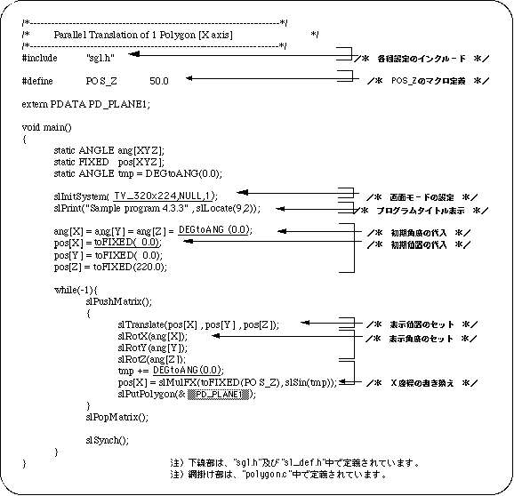
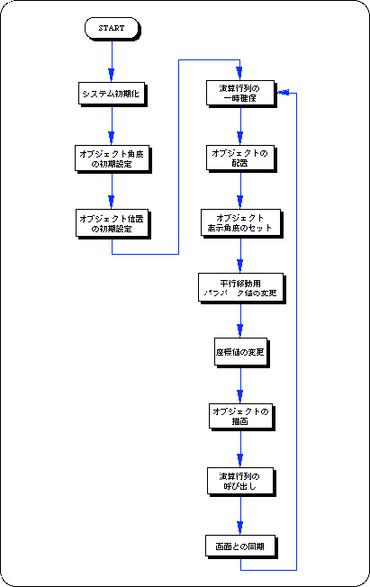

Return to previous page | Return to menu | Go to next page
The library function “slTranslate” is used to move objects in the space with SGL.
By substituting the movement amount for each axis of XYZ from the local point as a parameter, the object can be displayed at any coordinates in 3D space.
Listing 4-4 below uses the library function “slTranslate” to achieve translation parallel to the X axis. Sin value is used to control the movement parameter. The change of the angle value tmp controls the change of the X coordinate value.
Translation by “slTranslate” is expressed by the following formula.

